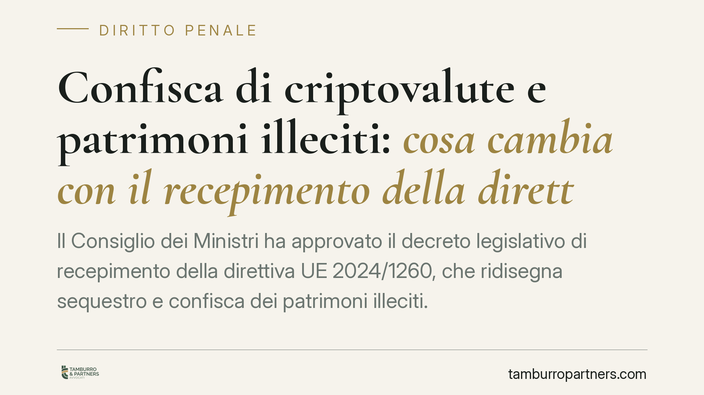

Confisca di criptovalute e patrimoni illeciti: cosa cambia con il recepimento della direttiva UE 2024/1260
Il Consiglio dei Ministri ha approvato il decreto legislativo di recepimento della direttiva UE 2024/1260, che ridisegna sequestro e confisca dei patrimoni illeciti. Custodia statale delle criptovalute, estensione della confisca allargata ai reati informatici e garanzie di proporzionalità sono i punti centrali. Per imprese e professionisti cambia il perimetro delle misure reali e delle relative tutele.

Il quadro
La direttiva UE 2024/1260 mira ad armonizzare gli strumenti europei di recupero e confisca dei beni provento di reato. Il decreto legislativo di recepimento approvato dal Consiglio dei Ministri interviene su tre fronti: la gestione dei cripto-asset sottoposti a vincolo, l'ambito applicativo della confisca e le garanzie procedurali dei soggetti incisi.
È opportuno un avvertimento preliminare: alcuni riferimenti operativi qui richiamati (tra cui il ruolo di Equitalia Giustizia, del Fondo unico giustizia e le modalità concrete di custodia dei cripto-asset) devono essere confermati sul testo definitivo pubblicato in Gazzetta Ufficiale. Fino a quel momento vanno trattati come indicazioni provvisorie.
Inquadramento normativo
Occorre tenere distinti due istituti che spesso vengono confusi.
Il sequestro preventivo (art. 321 c.p.p.) è una misura cautelare reale, adottata in fase di indagine o processo, che blocca la disponibilità del bene per evitarne la dispersione. Ha natura provvisoria e strumentale.
La confisca è invece l'esito ablatorio definitivo: comporta il trasferimento del bene allo Stato e, di regola, presuppone una condanna. Le due misure operano su piani diversi e con presupposti diversi.
La direttiva incide anche sulla cosiddetta confisca allargata, che consente di aggredire patrimoni sproporzionati rispetto ai redditi dichiarati quando il soggetto è condannato per determinati reati. Il recepimento ne estende il catalogo ad alcuni reati informatici.
Un punto merita cautela. La confisca per equivalente riguarda tipicamente valori corrispondenti al prezzo o al profitto del reato, quando l'oggetto diretto non è rintracciabile. L'eventuale estensione anche ai beni strumentali va verificata sul testo definitivo: non può darsi per assodata sulla base delle sole anticipazioni.
Le garanzie difensive rafforzate
La direttiva non introduce soltanto poteri ablatori più incisivi. Prevede anche un rafforzamento delle tutele, che il legislatore nazionale è tenuto a garantire.
Rilevano in particolare: il diritto del soggetto inciso di essere informato dei provvedimenti che lo riguardano e delle relative motivazioni; il diritto a mezzi di ricorso effettivi contro sequestri e confische; l'obbligo di una gestione dei beni vincolati orientata a evitarne il deprezzamento, con possibilità di alienazione anticipata dei beni deperibili o di difficile conservazione.
Su questi profili si giocherà buona parte dell'effettività della difesa: la contestazione della proporzionalità della misura e la verifica del rispetto degli obblighi informativi diventano leve tecniche concrete.
Implicazioni pratiche
Per imprese e professionisti l'estensione ai reati informatici sposta l'attenzione su un'area finora meno esposta a misure patrimoniali. Chi opera con infrastrutture digitali o gestisce dati altrui deve considerare che una contestazione informatica può oggi attivare strumenti ablatori patrimoniali.
Sul fronte cripto, la custodia statale degli asset digitali pone problemi tecnici inediti: gestione delle chiavi private, tracciabilità dei wallet, volatilità del valore. Sono aspetti che incidono sia sulla tutela del bene sia sulla quantificazione dell'importo confiscabile.
Nelle misure reali i margini difensivi si concentrano nelle prime fasi procedurali. Il termine per il riesame del sequestro preventivo è di dieci giorni dall'esecuzione o dalla notifica del provvedimento (art. 324 c.p.p.): un termine breve, che condiziona la strategia successiva.
Cosa fare in concreto
- Mappare i cripto-asset riferibili all'impresa o alla persona fisica: wallet, exchange utilizzati, titolarità delle chiavi e tracciabilità delle operazioni, così da poter documentare la provenienza dei fondi.
- Ricostruire la coerenza reddituale del patrimonio: nella confisca allargata l'onere di giustificare la sproporzione tra beni e redditi grava di fatto sull'interessato.
- Verificare i termini processuali: il riesame ex art. 324 c.p.p. va proposto entro dieci giorni, pena la definitività del vincolo cautelare.
- Aggiornare il modello organizzativo ex d.lgs. 231/2001 con riferimento ai reati informatici, calibrando i presidi sui nuovi rischi patrimoniali.
- Documentare la proporzionalità: raccogliere elementi utili a contestare l'eccesso della misura rispetto al valore effettivo del reato.
---
Contributo informativo a cura di Tamburro & Partners Avvocati. Non costituisce parere legale.
Ogni condominio ha una storia a sé.
Se gestisci un'amministrazione e vuoi un confronto su una specifica questione condominiale, scrivi allo studio. Ti rispondiamo entro un giorno lavorativo.